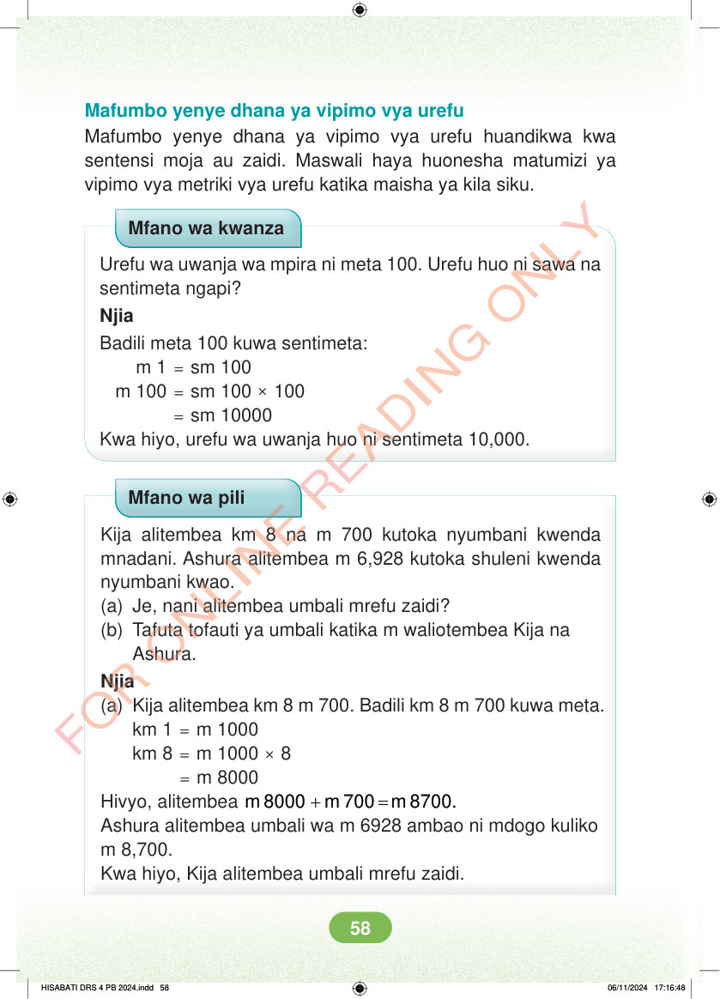

<!DOCTYPE html>
<html lang="sw-TZ"><head><meta charset="utf-8"><meta name="viewport" content="width=device-width,initial-scale=1">
<title>Hisabati: Kitabu cha Mwanafunzi Darasa la Nne</title>
<meta name="title-id" content="pg064_sec001"><meta name="page-section-id" content="67">
<link href="./content/tailwind_output.css" rel="stylesheet"><link href="./assets/libs/fontawesome/css/all.min.css" rel="stylesheet"><link href="./assets/fonts.css" rel="stylesheet">
<style>body{margin:0;background:#eef1ed}main{width:100%;display:flex;justify-content:center;padding:1rem 1rem 5rem;box-sizing:border-box}#content{width:100%;display:flex;justify-content:center}.pdf-page{position:relative;width:min(calc(100vw - 2rem),56rem);aspect-ratio:540.8980102539062/750.6610107421875;background:white;box-shadow:0 4px 24px #0002;overflow:hidden}.pdf-page img{position:absolute;inset:0;width:100%;height:100%;object-fit:fill}</style>
</head><body><main><h1 class="sr-only" id="page-heading">Ukurasa wa 64</h1><div id="content" class="opacity-0"><section role="article" data-section-type="pdf_accessible_page" data-section-id="pg064_sec001" aria-labelledby="page-heading" class="pdf-page"><p class="sr-only" data-id="pg064_gp001_tx001">Mafumbo yenye dhana ya vipimo vya urefu Mafumbo yenye dhana ya vipimo vya urefu huandikwa kwa sentensi moja au zaidi. Maswali haya huonesha matumizi ya vipimo vya metriki vya urefu katika maisha ya kila siku. Mfano wa kwanza Urefu wa uwanja wa mpira ni meta 100. Urefu huo ni sawa na sentimeta ngapi? Njia Badili meta 100 kuwa sentimeta: m 1 = sm 100 m 100 = sm 100 × 100 = sm 10000 Kwa hiyo, urefu wa uwanja huo ni sentimeta 10,000. Mfano wa pili Kija alitembea km 8 na m 700 kutoka nyumbani kwenda mnadani. Ashura alitembea m 6,928 kutoka shuleni kwenda nyumbani kwao. (a) Je, nani alitembea umbali mrefu zaidi? (b) Tafuta tofauti ya umbali katika m waliotembea Kija na Ashura. Njia (a) Kija alitembea km 8 m 700. Badili km 8 m 700 kuwa meta. km 1 = m 1000 km 8 = m 1000 × 8 = m 8000 Hivyo, alitembea + = m 8000 m 700 m 8700. Ashura alitembea umbali wa m 6928 ambao ni mdogo kuliko m 8,700. Kwa hiyo, Kija alitembea umbali mrefu zaidi. HISABATI DRS 4 PB 2024.indd 58 HISABATI DRS 4 PB 2024.indd 58 06/11/2024 17:16:48 06/11/2024 17:16:48</p></section></div></main><div class="relative z-50" id="interface-container"></div><div class="relative z-50" id="nav-container"></div><script src="./assets/offline-preloader.js?v=audiofix-20260824-1"></script><script src="./assets/scorm.js"></script><script src="./assets/base.bundle.local.js?v=audiofix-20260824-1"></script></body></html>